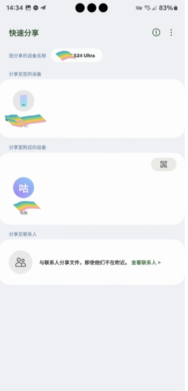

快速分享这软件看着简单，我踩过的四个坑
以为就是个点对点传文件的工具，上手才发现隐藏了不少版本门槛和无线栈细节——这几个坑我替你踩过了。
开头：这软件"看着用着"两回事
当初从三星电脑预装里翻出quickshare官网的时候，我以为它就是个安卓和 Windows 之间传个文件的小工具——点选、发送、收工。

用了小半年，从同一部手机同一条数据线到换了台电脑换了个网络环境，才发现它背后藏着一堆你没注意到的前提条件。有些是版本门槛，有些是无线环境冲突，还有些是系统设置里被你关掉的权限被它偷偷用上了。这篇就聊我踩过的四个典型坑，每个都真实存在于排查文档里，不是我编的。
坑一：传输到一半断了，以为文件没了
症状：大文件传着传着进度条卡住不动，然后通知栏弹出一个"传输失败"——我第一次遇到的时候以为整个文件要从头来过，当场删掉重发。结果删了之后才在通知栏看到一条几十秒后才出来的"传输已恢复"。
原因：快速分享本身带断点续传，但它的续传机制不是秒级的——信号中断后需要重新走一遍蓝牙握手再建立 Wi-Fi 直连，这中间有个几十秒的空窗期。后来去quickshare文档翻了一下，原话是"信号中断后传输可自动续接，不需要整个文件从头来"，但如果在这个空窗期里你手动取消了或者删了文件，那续传就彻底没戏了。
解法：传输卡住之后先等个一分钟，别着急删。如果一分钟后还是不动，再查两个东西：一是 Wi-Fi 有没有被热点或投屏占用，二是双方蓝牙是不是都还开着。真要重来也别慌，先用链接传输走服务器中转兜底，直传信号恢复了再切回来。
坑二：收完的文件相册里找不到
症状：手机上给朋友发了一张图，朋友说没收到——让他去相册看，他翻遍最近列表也没有。我自己收完也遇到过：照片明明显示传输完成，相册里就是刷新不出来。
原因：快速分享接收的文件默认落点是系统"文件"应用里的「下载 > 快速分享」文件夹，而不是直接写进相册。安卓的媒体扫描有延迟，刚接收的图片有时候要等几分钟才被收编进相册的最近列表。如果设备的文件应用有自动清理策略（比如某些机型的下载目录 30 天自动清理），那更糟——文件可能在你意识到之前就没了。
解法：收到文件之后先点通知栏里的"打开"直达文件，或者在文件应用里搜"快速分享"直接跳文件夹。重要的文件收完就转存到自己的工作目录，别让它躺在下载文件夹里冒险。我自己现在的做法是每次收完都顺手挪一下，形成肌肉记忆。
坑三：剪贴板分享功能看不到
症状：复制了一段文字，期待底部弹窗出现"设备"入口，结果只有常规的复制、全选、粘贴选项——反复复制反复试，就是没这个选项。
原因：这个功能是安卓 13 及更高版本专属，官方文档里写死了适用条件。我的备用机还在安卓 12，那台机上永远看不到"设备"入口。此外即使系统版本够了，如果快速分享的应用版本太旧，也可能不显示这个入口。
解法：先确认系统版本——设置 > 关于手机 > 软件信息里看 Android 版本号。再确认应用是不是从官方下载拿的最新版，商店里搜一下看有没有待更新的内容。这两条都满足了还没有，重启手机让系统重新加载无线栈。

坑四：Windows 电脑蓝牙频繁掉线
症状：手机传电脑的时候特别容易断，尤其是传大文件或者连续传几个文件的时候。每次断开都要等很久才能重连，有时候甚至要重启电脑才能恢复。
原因：Windows 11 23H2 的蓝牙驱动在某些机型上确实有兼容问题，快速分享的桌面端更新说明里专门提过"修复部分 Windows 11 23H2 蓝牙掉线问题，提升续传稳定性"。如果你的电脑用的是旧版本桌面端，加上系统驱动又老，那断开简直是必然。
解法：先确认桌面端是最新版——微软商店里打开快速分享的详情页，看有没有待更新的内容。如果已经是最新版还是掉，去设备管理器里把蓝牙驱动更新一下，实在不行就等 Windows 的累积更新包推送修复。临时救急的话，传大文件直接走链接传输通道，不依赖本机蓝牙和 Wi-Fi 直连的稳定性。
防坑清单
踩了这些坑之后我总结了几条，每次用之前扫一眼就行：
- 传文件卡住先等一分钟，别手贱删东西
- 收完文件先转存到自己的工作目录
- 剪贴板分享仅限安卓 13+，别在老机器上瞎折腾
- Windows 桌面版确保是最新版，蓝牙驱动也要跟上
- 传输双方保持 30 厘米以内，别越传越远
- 电脑上同时开热点或投屏的话，先关掉再传
收尾
知道这些坑之后，快速分享其实相当省心——同账号设备之间连确认都不用点，文件到了自动收。但前提是你得先把这几个前提条件捋顺，不然真的会以为这软件坏了。我把排查过程中收集到的这些细节整理成了一份资料，同步放在了GitHub、Gitee和GitCode三个仓库里，不同网络环境都能访问。我个人最常用的还是手机同电脑之间传几张工作图，偶尔遇到大文件换个链接传，大部分时间都很顺畅。